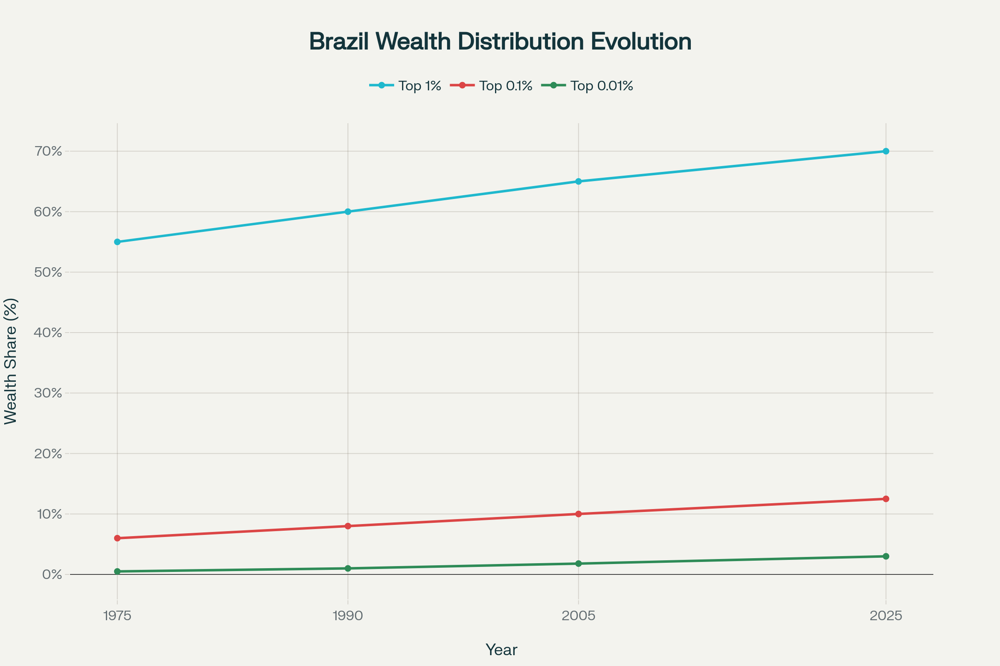

Ao longo dos últimos 50 anos, a concentração de renda no Brasil aumentou significativamente. O 1% mais rico passou a controlar cerca de 70% da riqueza total do país, enquanto os grupos de 0,1% e 0,01% super-ricos também ampliaram sua participação. Apesar de avanços sociais, a distribuição permanece altamente desigual, e a renda no topo cresce muito acima da média nacional. Os infográficos abaixo ilustram essa evolução histórica e os desafios da desigualdade econômica brasileira.
Crescimento da concentração dos mais ricos (1975–1990)
O 1% mais rico detinha 55% da riqueza nacional em 1975 e chega a 60% em 1990.
O 0,1% e 0,01% também ampliam sua fatia, destacando o aumento da desigualdade.

Avanço e desafios sociais (1991–2005)
O percentual de riqueza do 1% cresce de 60% para 65%.
O país experimenta estabilização econômica e algum avanço em redução da pobreza, mas a elite segue aumentando o domínio da riqueza.
A escalada do topo (2006–2025)
O 1% avança de 65% para 70% da riqueza nacional.
O 0,1% mais rico atingindo 12,5% e o grupo dos 0,01% chegam a 3%.
A desigualdade estrutural se intensifica, com o topo crescendo muito acima da média.
Comparativo de Renda Média (2005 vs 2025)
O salto na renda média mensal dos super-ricos em 20 anos:
1%: R$ 45 mil para R$ 103 mil
0,1%: R$ 500 mil para R$ 2,57 milhões
0,01%: R$ 2,5 milhões para R$ 7 milhões